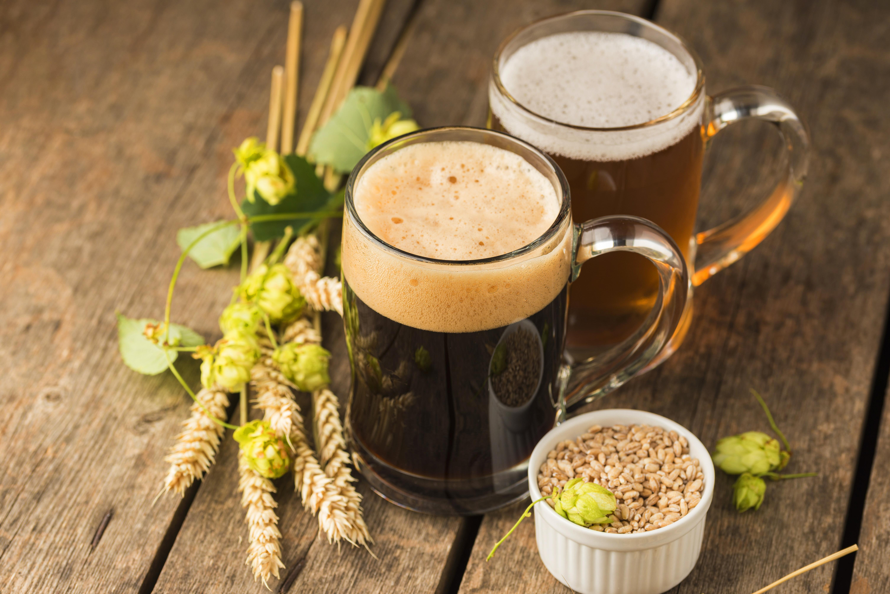

Kvass

Description
Kvass is a traditional fermented beverage from Eastern Europe, typically made from rye bread, water, and sugar.
It has a mildly sweet, slightly tangy flavor and is often enjoyed as a refreshing, probiotic-rich drink. Current recipy is taken from this
website.
Ingredients
- 0.5-1 pound (227-454 g) rye (or other) bread
- 1 gallon (3.78 L) water
- 1.5 cups (300 g) sugar (I like to use brown sugar, but honey is okay, too)
- Small handful dried herb(s), for flavoring (usually dried mint, but I've seen basil, thyme, or rosemary used)
- 0.4 ounce (12 g) raisins
- 0.5-0.75 cup (120-180 ml) wild yeast starter or commercial beer yeast
Steps
- Slice the bread and break the slices into smaller pieces. Place them in a preheated 350°F (177°C)
oven for 10 minutes, then broil on high until golden brown—this can take 3 to 5 minutes depending on your oven. You basically want your bread to look
like slightly overdone toast, which will give the brew a nice amber look and better flavors.
- Meanwhile, pour the water and sugar into a pot and bring the liquid to a boil. Place the toasted bread, herbs, and raisins in the
boiling liquid and stir briefly. Bring the liquid back to a boil, then remove the pot from the heat.
- Place the pot (with the lid on) in cold water and cool the liquid to 70°F (21°C), then add the yeast (½ to ¾ cup or 120-180 ml for wild yeast starter).
Either keep everything in the original pot with the lid on or transfer the contents into a fermenting bucket fitted with an airlock or a clay pot/glass
container with a clean towel on top.
- Ferment for around 8 to 12 hours, until you see some bubbling going on, then strain the liquid into a bottle or into recycled soda bottles
if you want carbonation. Check the pressure and place the bottles in the refrigerator when ready. Drink within a couple of weeks.
Home